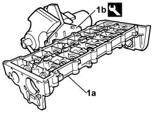
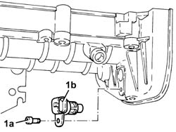
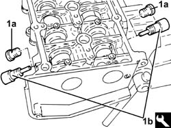
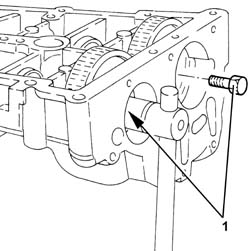
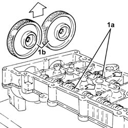
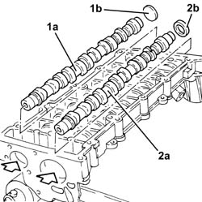
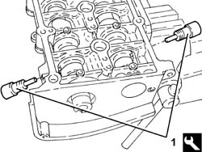
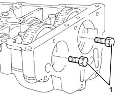
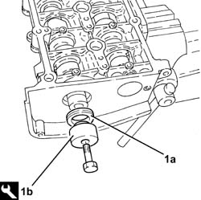

1036C14 CAMSHAFTS in cylinder head - R.R. with head removed
- Path
- Procedures > 10 ENGINE > 1036 TIMING SYSTEM > 1036C CAMSHAFTS (2) IN CYLINDER HEAD (1) > 1036C14 CAMSHAFTS in cylinder head - R.R. with head removed
- Kind
- repair procedure (removal / refitting; the operation number is the code)
- Applies to
- engines: 2.4 JTD 20V; all production periods
- Interactive page
- https://sloeber94.github.io/elrnDB-lThss/en/#/850215
Applies to: engines: 2.4 JTD 20V; all production periods
 Removing
Removing
 Refitting
Refitting1. Position the camshaft housing (1a) in a vice using the tool (1b).
 | Description | Code | Function |
|---|---|---|---|
1b | Support | 1.860.470.001 | Service cylinder head |

Applies to: engines: 2.4 JTD 20V; all production periods
1. Undo the bolt (1a) and remove the cam angle sensor (1b).

Applies to: engines: 2.4 JTD 20V; all production periods
- Check that the camshaft endfloat is within the recommended values using a dial gauge.
 | Subject | Value |
|---|---|---|
. | Camshaft | mm |
- | End float | - |
- If the camshaft endfloat is not within the recommended values, replace the worn components when reassembling the cylinder head.
1. Remove the plugs (1a) and fit the camshaft timing tools (1b) on the camshaft housing.
| Description | Code | Function |
|---|---|---|---|
1b | Templates | 1.870.896.900 | Engine tuning |

Applies to: engines: 2.4 JTD 20V; all production periods
1. Undo the bolts fixing the camshaft gears.

Applies to: engines: 2.4 JTD 20V; all production periods
- Remove the camshaft timing tools from the camshaft housing.
| Description | Code | Function |
|---|---|---|---|
. | Templates | 1.870.896.900 | Engine tuning |
1. Release the camshafts (1a), as necessary and remove the camshaft gears (1b).

Applies to: engines: 2.4 JTD 20V; all production periods
1. Extract the inlet side camshaft (1a) and plug (1b) using a suitable drift.
2. Extract the exhaust side camshaft (2a) and oil seal (2b) using a suitable drift.
- Remove the exhaust side camshaft oil seal.

Applies to: engines: 2.4 JTD 20V; all production periods
Refitting
Removing- Place the camshafts in their housings.
- Place the camshaft gears in their housings and secure them without tightening the bolts.
1. Fit the camshaft timing tools.
| Description | Code | Function |
|---|---|---|---|
1 | Templates | 1.870.896.900 | Engine tuning |

Applies to: engines: 2.4 JTD 20V; all production periods
1. Tighten the bolts fixing the camshaft gears to torque.

Applies to: engines: 2.4 JTD 20V; all production periods
1. Fit the exhaust side camshaft front oil seal (1a) using the tool (1b).
| Description | Code | Function |
|---|---|---|---|
1b | Fitting tool | 1.870.896.800 | Fitting exhaust camshaft oil seal |

Applies to: engines: 2.4 JTD 20V; all production periods
- Fit the inlet side camshaft plug.
- Place the exhaust side camshaft toothed drive pulley in its housing and secure it without tightening the bolt.
1. Place the cam angle sensor (1b) back in its housing and secure it tightening the bolt (1a) to torque.
Applies to: engines: 2.4 JTD 20V; all production periods
- Remove the camshaft housing complete with support tool from the vice and separate them.
| Description | Code | Function |
|---|---|---|---|
. | Support | 1.860.470.001 | Service cylinder head |